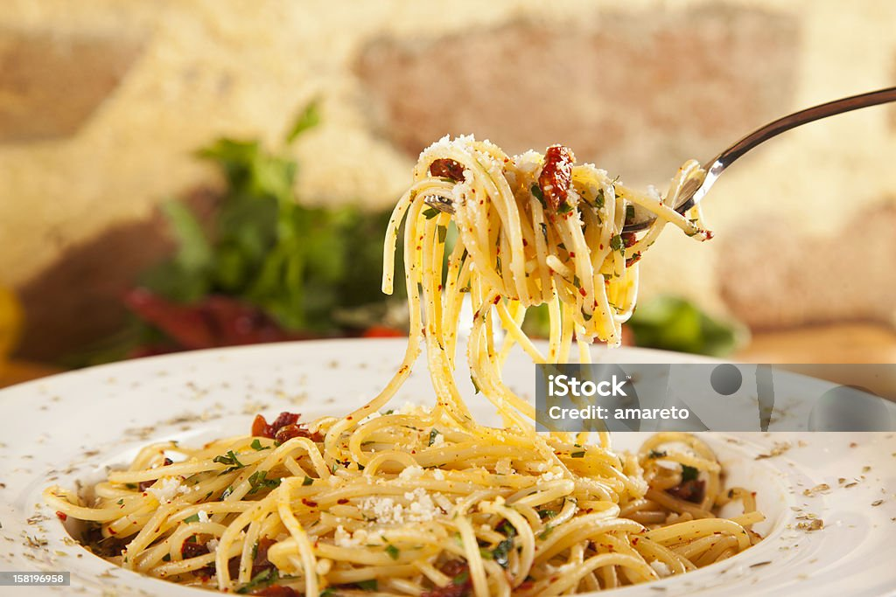

Menu du Jour : Spaghetti

Spaghetti à la Sauce Tomate
Découvrez notre délicieuse recette de spaghetti à la sauce tomate, préparés avec des tomates fraîches, du basilic et un soupçon d'ail. Un plat classique qui ravira vos papilles !
Ingrédients :
- 400 g de spaghetti
- 1 boîte de tomates concassées (400 g)
- 2 cuillères à soupe d'huile d'olive
- 2 gousses d'ail, émincées
- 1 oignon, haché
- Sel et poivre au goût
- Basilic frais pour la garniture
Préparation :
- Faites cuire les spaghetti dans une grande casserole d'eau bouillante salée selon les instructions du paquet.
- Dans une poêle, chauffez l'huile d'olive à feu moyen. Ajoutez l'oignon et l'ail, et faites revenir jusqu'à ce qu'ils soient dorés.
- Ajoutez les tomates concassées, le sel et le poivre. Laissez mijoter la sauce pendant environ 15 minutes.
- Une fois les spaghetti cuits, égouttez-les et ajoutez-les à la sauce. Mélangez bien pour enrober les pâtes.
- Servez chaud, garni de basilic frais.